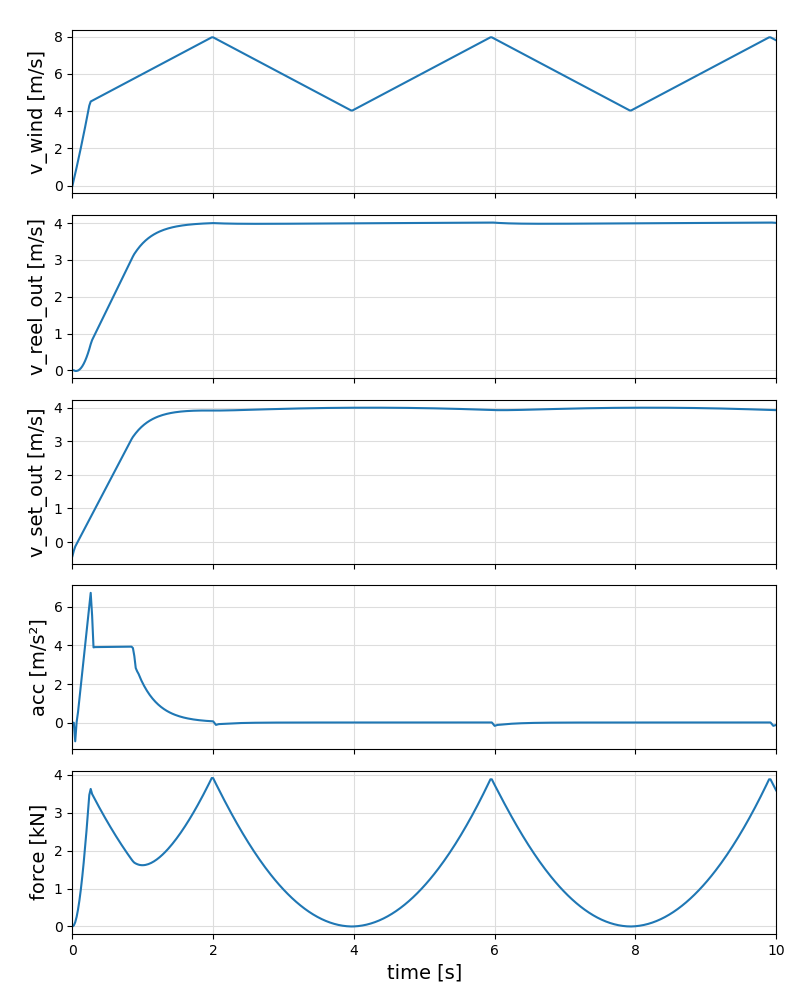
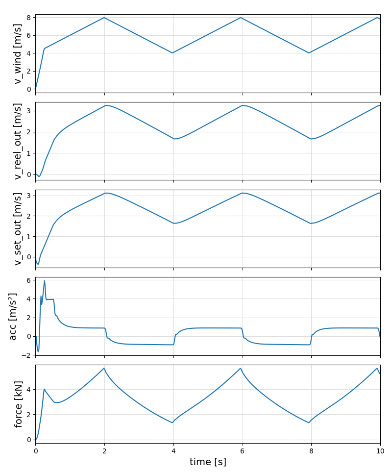
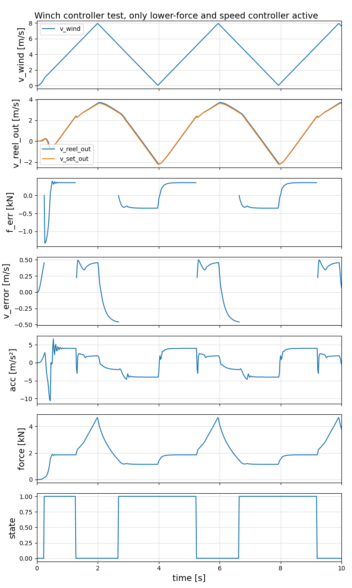

Tests
All tests can be executed using the command:
include("examples/menu.jl")Most of these tests are not yet unit tests.
Requirements
- the force must never be below zero.
- the max force shall not be above the nominal force of the winch, in this case 4000 N.
- the absolute value of the acceleration must never exceed
max_acc. - the oscillations after switching the active controller shall be low.
- the maximum of the force error shall be low
- the mean of the square of the speed error shall be low
- the robustness for model errors (for example with respect to the inertia of the drum and the drum diameter) shall be high
Open question: can all these requirements be combined in two or three performance indicators, fornexample efficiency, robustness and damage? See also: Performance Indicators
SpeedController
SpeedController1
This test assumes a wind speed that starts at zero and reaches its nominal value after 0.25s. The nominal value is a triangle signal between 4 and 8 m/s and a period time of 4s. The tether direction is aligned with the wind direction, the set value for the reel-out speed is 4 m/s. This means when the nominal reel-out speed is reached, the apparent wind speed is between zero and 4 m/s. The force is proportional to the square of $v_a$.

SpeedController2
This test is similar to the last test, but the set speed is calculated according to $v_{ro} = \sqrt{f} * kv$ , where $f$ is the measured tether force and $kv$ is a constant that needs to be optimized for a given kite power system. This should allow optimal energy harvesting during reel-out.

ForceSpeedController
ForceSpeedController1
This controller tests the combination of the lower force controller with the speed controller for the reel-out phase, where the reel-out speed shall be proportional to the square-root of the force. The lower force limit was set to $1500~N$.

State
0. lower force controller active; 1. speed controller active
ForceSpeedController2
This controller tests all controllers. The lower force limit was set to $350~N$, the upper force limit to $3800~N$. 
State
0. lower force controller active; 1. speed controller active; 2. upper force controller active
Ideas
- add torque controlled winch (which will require a modified controller)
- add static tether model
- linearize the winch+tether models
- create bode plots
- analyze the stability
- add auto-tuning script